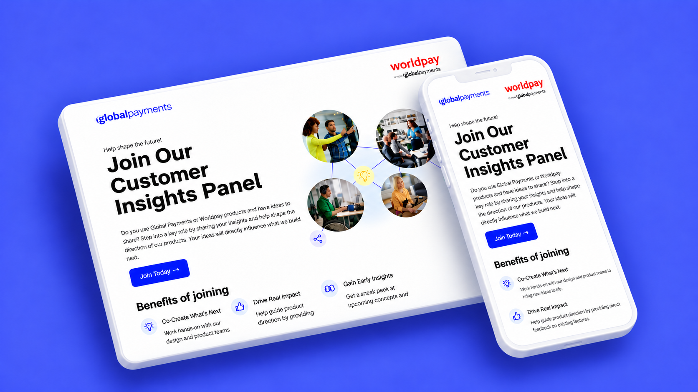

We had five days to build a research recruiting site
The research team needed a place to send customers who were curious about joining the Customer Insights Panel. I designed and built the site with them. This is where the HTML and CSS I learned customizing MySpace pages came in handy.
- Timeline
- 5 days
- My role
- Design + development
- Collaboration
- Research team

One place to send customers
The research team needed one destination for recruiting participants. Invitations were spread across a developer portal banner and merchant-facing opt-in questions. The website needed to explain the panel, its benefits, and what participation involved, then provide a clear path to join, all within five days.
How I split the work with research
I carried the work from design into development. I collaborated with the research team, created imagery using company photography, and built the website to help meet the deadline.
The team provided the content. I focused on how to present it clearly, make the invitation feel welcoming, and help customers understand what participation would involve.
Development was outside my usual role, but I saw an opportunity to contribute beyond the design handoff. Drawing on my existing coding knowledge, I helped turn the design into a working website.
-
Inclusive imagery
Different perspectives, represented in the invitation.
-
Accessible contrast
Readable text across the chosen backgrounds.
-
Mobile-first layouts
Content prioritized for smaller screens.
I kept the photo with the cat
I wanted customers to see a range of people in the invitation, so I pulled together company photos that represented different races, genders, and people with disabilities.
I also considered how the imagery worked with the brand. Global Payments’ vibrant blue provided a strong foundation, while varied shirt colors added visual diversity and kept blue from dominating the page.
One photo showed a woman hugging her cat. As a cat person on a team of pet owners, I liked how much warmth that little detail brought to a company website.
I started with the smallest screen
I designed for smaller screens first and checked color contrast throughout. Starting with mobile helped me prioritize content and preserve a clear reading order as the layout expanded for desktop.
White space, distinct sections, and concise step-by-step guidance made the page easier to scan. Icons complemented the written instructions, keeping the meaning available in text.

Photography: a welcoming invitationA range of people and a personal detail, the woman with her cats, help the panel feel approachable.
Numbered steps: clear expectationsThe “What’s next?” section breaks participation into a short, scannable sequence.
Mobile and desktop: the same storyStacked content on mobile becomes a wider layout on desktop while preserving the reading order.
What would I want to know before signing up?
The page introduces the panel with a direct invitation: help shape the future of Global Payments and Worldpay products. I organized the page around the questions I’d ask before signing up.
- Why should I join?
- What happens after I sign up?
- What will participation involve?
- How will my information be used?
Benefits, participation steps, and frequently asked questions support the primary “Join Today” action. Clear headings and generous white space make the page easier to scan, while icons give the participation steps visual structure and reduce the sense of a text-heavy experience.
I took the design into code
I developed the page using HTML, CSS, and JavaScript, translating the design into responsive layouts. The implementation included the recruitment content, signup links, and expandable FAQs. Working across design and development allowed me to carry the visual hierarchy, imagery, and responsive decisions through to the live page within the five-day timeline.
What we shipped in five days
A single destination for learning about and joining the panel. Customers can understand participation and access the signup form; the research team has one link to share in its invitations.
What I took from the build
Building the page myself meant I could carry the details I cared about into the live site, from the order of the content on mobile to how the FAQs opened. I also got to use a skill I’d picked up for fun to help the team get something out the door.